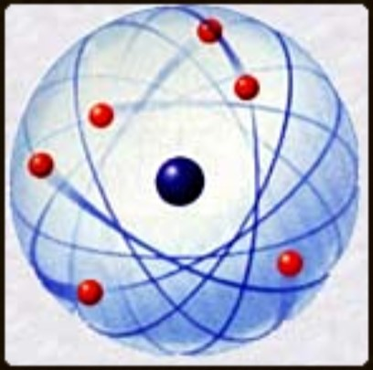
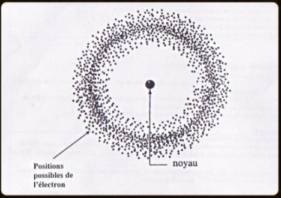

Vision de l'atome avant la physique-quantique :
En 1904, Joseph John Thomson, propose son modèle de l'atome, que l'on entend aussi sous le nom " modèle du plum pudding ". Les électrons seraient dans le noyau selon ce chercheur, tel des pépites de chocolat (électrons) qui seraient dans le cookie (noyau). Cette vision de l'atome qui est certes très amusantes est pourtant fausse. Un atome est surtout composé de vide en réalité, pour mieux imaginer la chose. Imaginer l'espace. Même s'il y a des planètes, des astres, des astéroides, etc. Au final le vide correspond à un bien plus grand pourcentage. Prenons en exemple la Terre, le rayon de la Terre est de 6 400km, c'est beaucoup mais la distance entre la Terre et la Lune qui est pourtant très proche est de 384 400 km et ça s'est entre la Terre et la Lune mais si on devait prendre la Terre comme le centre et la Lune comme étant l'extrémité et former une sphère à partir de cela, vous verrez bien que le volume que prend la Terre et la Lune dans cette sphère est très infime. C'est exactement la même chose avec les atomes, les nucléons ( protons (+) ; neutrons ) et les électrons (-) ne représentent qu'une très infime partie de l'atome qui est surtout composé de vide, on appelle cela une structure lacunaire. Le modèle fut invalidé en 1909 par l'expérience de Rutherford.
En 1911, Ernest Rutherford, après l'expérience en 1909 aussi appelé l'expérience de Rutherford ou expérience de la feuille d'or qui permit d'invalider le modèle de Thompson. Créa le modèle planétaire qui est un atome qui a autour de lui en orbite, des électrons. Comme vous pouvait le voir l'espace permet encore une fois de bien visualiser ce modèle. Malheureusement, lui aussi est incorrecte. Pour la simple et bonne raison qu'il est instable. Ce modèle ne prend pas en considération les ajouts, ou perte d'énergie d'un atome. Car s'il en gagne l'électron va s'éloigner de l'atome tandis qu'à l'inverse s'il se rapproche, c'est qu'il a perdu de l'énergie. Sur l'image cela signifie, que les points rouges devraient s'éloigner ou se rapprocher du point noir qui correspond au noyau.
Vision de l'atome avec la physique-quantique :
En 1913, Niels Bohr, en utilisant le modèle planétaire de Rutherford, arrive à son modèle, le modèle de Bohr. Cette fois-ci, vous voyez qu'il ressemble à l'image précédente, mais il a des spécificités en plus. On remarque de nouvelles orbites autour du noyau. Si vous avez bien compris ici, c'est pour prendre en compte les pertes et gain d'énergies. Pour faire simple, imaginons que votre atome a un photon qui se dirige vers l'un de ses électrons. Cette électron va récuperer cette énergie et donc elle va avoir besoin de s'éloigner de son noyau pour redevenir stable. Puis après quelques temps, il va renvoyer ce photon, et donc perdre de l'énergie et de ce fait revenir sur une orbite plus proche du noyau encore une fois pour gagner en stabilité. Même si ce modèle est plus correcte, en 1925 ce modèle est abandonné pour un modèle qui se base sur la physique quantique. Ce que Bohr a apporté est une vision de l'atome qui marche pour l'hydrogène qui n'a qu'un électron mais dans le cas où il y en a plusieurs, les choses deviennent plus compliquées.
En 1926, afin de régler le problème des atomes qui ont plusieurs électrons, et de la nature des liaisons chimiques. Erwin Schrodinger apporta son modèle qui résout beaucoup de points. Tout d'abord, c'est grâce à l'expérience de Louis de Broglie en 1926 qui permit la réalisation de ce modèle car c'est à partir de ce moment-là que l'on a arrêté de voir les particules (électrons, atomes, protons, neutrons, etc ) que comme des particules mais aussi comme une onde. C'est plus difficile à comprendre mais au final cela ne change pas tant que ça. Il y a des électrons qui orbitent autour d'un noyau avec des orbites plus ou moins proche du noyau. Mais, comme il s'agit d'une onde, on ne sait pas exactement où elle se situe. Par contre, on peut déterminer une zone où l'électron a le plus de chance d'être localiser comme vous pouvait le voir sur l'image.
